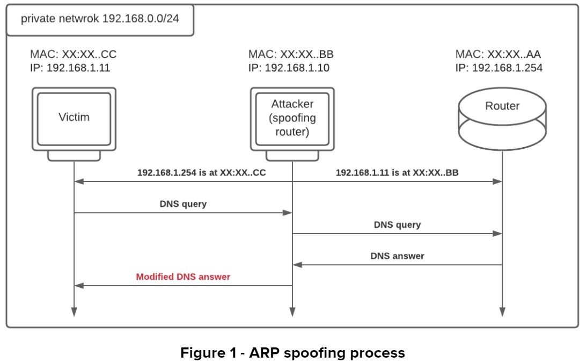
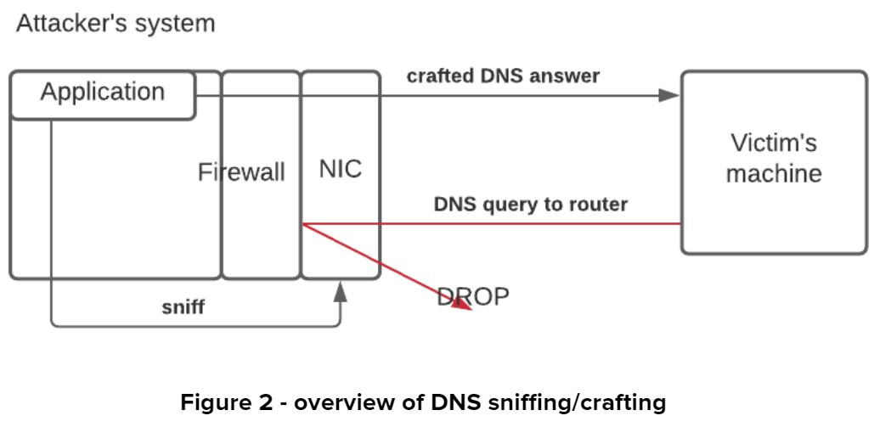
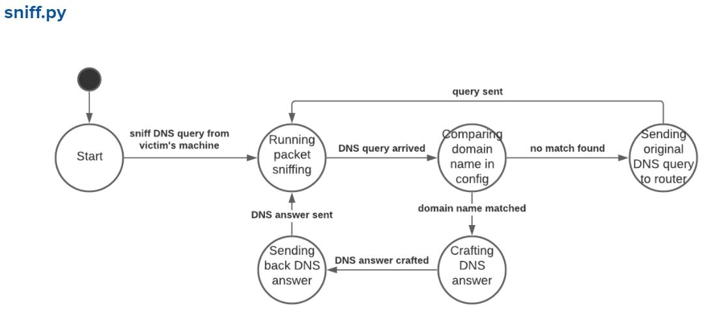
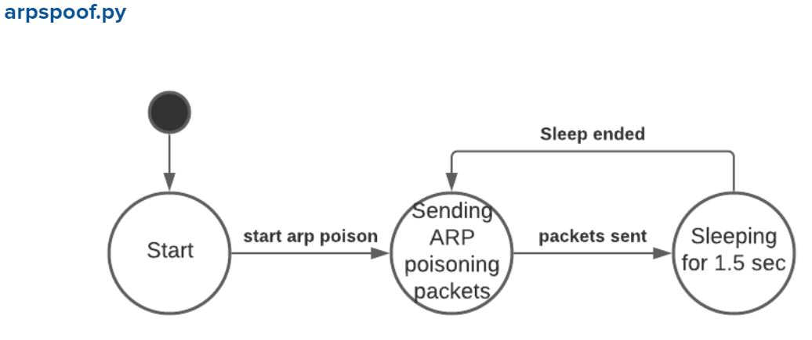
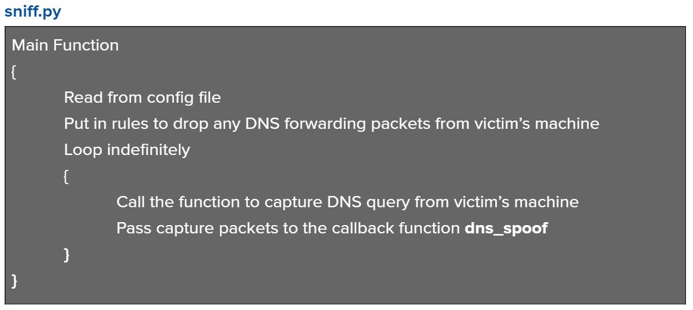
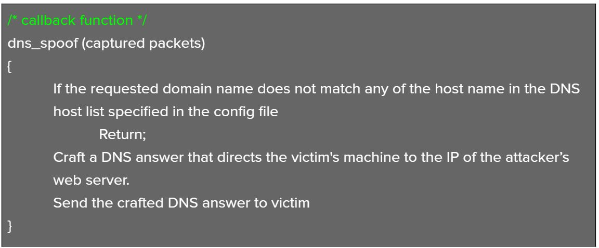
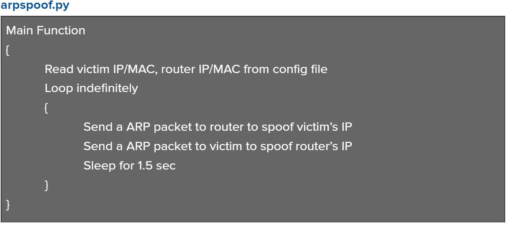
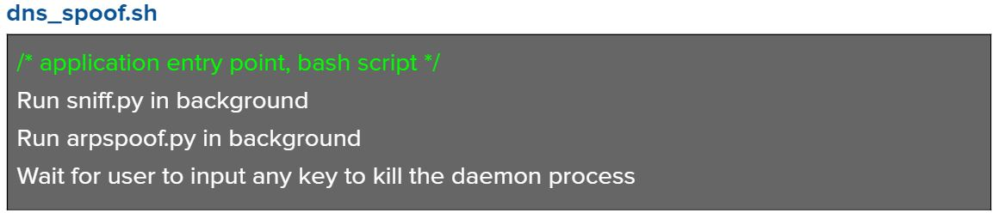
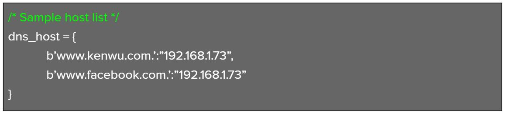

Objective
To design a basic DNS spoofing application
Constraints
- The application will simply sense an HTML DNS Query and respond with a crafted Response answer, which will direct the target system to specific websites (such as the attacker's web server)
- The application should be able to handle any arbitrary domain name string and craft a spoofed Response.
Approach
We will use the python library Scapy to implement DNS spoofing application. There will be two components in this application. One of them is responsible for running ARP poisoning. The other is responsible for sniffing/crafting DNS responses/answers. To make the application more customizable, we will have the application read the intended spoofing Domain name/IP pair from a configuration file
In order to prevent the victim's machine from receiving legitimate DNS answers, the application will impose a blocking rule on the forwarding table. Any DNS answer from the outside network destined to the victim's machine will be dropped. However, network traffic capturing happens before the firewall, therefore, the sniffing component will still be able to pick up the DNS answer before it gets dropped. After the application picks up the DNS answer, it will compare it with the domain name specified in the configuration file. If there's a match, the application will craft a spoofed DNS answer that directs the victim's browser to the attacker's web server, and send the crafted DNS answer to the victim. If there's no match , the application will simply send the original DNS answer back to the victim's machine.
The figures below show a high level overview of the two components.
 Application Design
Modules
The application consists of four parts -
sniff.py
,
arpspoof.py
,
config.txt
, and
dns_spoof.sh
- sniff.py - an independent program. Responsible for sniffing the victim's DNS request and crafting spoofed DNS answers.
- arpspoof.py - an independent program. Responsible for running ARP poisoning. Reads from config.py to determine ARP spoofing targets.
- config.py - a configuration file. Has two objects - host_info and dns_host . The host_info object includes information required by sniff.py . The dns_host object is simply a list of domain names/IP pairs, which is required by the arpspoof.py . Detailed information about this config file can be found at the Usage section below.
- dns_spoof.sh - application entry point. A simple bash script that runs both sniff.py and arpspoof.py in background, and waits for any user input. When a key is entered, the bash process will kill the sniff.py and arpspoof.py running in background, then exit.
State machine
 Pseudo implementation
   Usage
Step 1
Open the config.py, fill in the info for each key-value pair in host_info object.
- victimIP - IP of the victim's machine. Must be the IP of the same network. routerIP - IP of the router in the same network. routerMAC - MAC address of the reouter in the same network victimMAC - MAC address of the victim's machine in the same network attackerMAC - MAC address of the attacker's machine in the same network Interface - name of the NIC to use
Do the same for the dns_host object. This object includes the Domain names we want to spoof. Make sure to add a 'period' at the end of every domain name.

Step 2
To start the DNS spoofing application, cd into the application folder, and simply run the bash script
dns_spoof.sh
. As shown in the pseudo implementation section above, the scripts will automatically start bath the packets sniffing and ARP poisoning program.
Source code
The project source code can be found here .